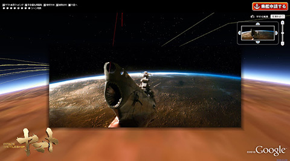

Web movie
2009年、自身が代表取締役を務める会社で、業界最大手の食品メーカーの社会貢献PRムービー2作品を企画提案
業界トップのCGプロダクションと共同制作しました。
『世界の子どもたちの笑顔のために』～栄養改善プロジェクト～
『つながる、いのち』〜自然のめぐみをいつまでも〜
企画・提案 株式会社フォトン
制 作 株式会社ポリゴン・ピクチュアズ
2007年、食品メーカーの広告部に契約社員として参画。ウェブマスターのサポートとして、アクセス解析レポートの作成・ブログ更新などを担当するかたわら、グローバル企業の社会貢献活動を魅力的に伝える手法として、グーグルアースを活用した企画を提案したものです。
Web site
担当業務：営業・企画
2010年、自身の会社で『SPACE BATTLESHIP ヤマト』の映画公開記念キャンペーンサイト受注
担当業務：webディレクション・SEO・企画
会社員時代の2003年、会社がWeb事業を強化する方針でWeb制作会社に出向。以下のプロジェクトに参加、企画・ディレクションのサポートに従事
・シャンプーのキャンペーンサイト（3ヶ月間）
・文具メーカー環境サイト（1年間）
・ハウスメーカーと楽器メーカーのタイアップサイト（6ヶ月） etc...
2004年出向を終え自社に戻った際、創業時から続く5つの事業部による営業活動を、ホームページ上では11のソリューションに展開させ、以下を実現
・アクセス数3倍に増加
・見積り問合せ件数の増加
・リクルート希望者数の増加
・印刷コストの削減（HP上にWebカタログを実装し、紙のカタログを廃止）
経営・経理
2008年
株式会社（ITベンチャー）の代表取締役に就任
担当業務：企画・営業・経営・経理・法務
2009年
黒字化
外注していた会計業務をクラウド会計に切り替え、自ら経理を担いコスト75%削減を実現
大口案件(味の素 電通 東宝）3件を受注
経費、外注先の見直しで、赤字体質からの脱却
2016年
アメリカに移居した際は、日本の税理士事務所と連携をとりながら、滞りなく決算を終えた
2021年
株式会社を円満閉店するまで、法務書類などは司法書士に頼らず自ら作成するなどし、組織に貢献